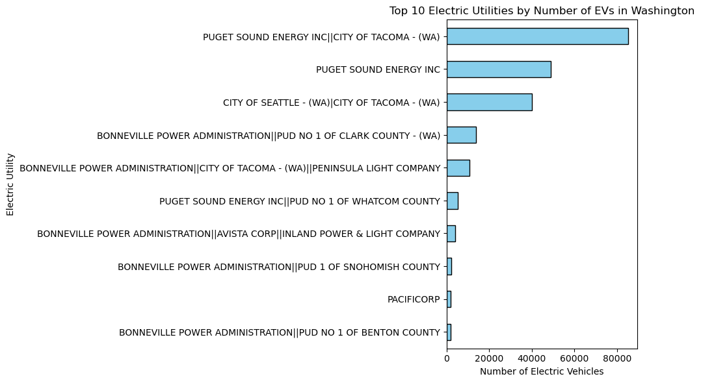

Data Visualizations
Visualization 1 (Sankey)
The Sankey diagram maps out the flow of electric vehicle brands as well as their specific models across all the counties in the state of Washington, highlighting how certain makes, like Tesla for example, dominate the distribution landscape. Tesla's Model 3 and Model Y span multiple counties, which is indicative of a widespread popularity and their trademark as a strong brand in the electric vehicle industry. This visualization helps contextualize how different vehicle types are distributed geographically, alluding to probable regional preferences, as well as adoption trends of electric vehicles in Washington. To depict the relationship between EV make, model, and location, a Sankey diagram was chosen for its strength in its ability to show hierarchical flow. The nodes represent each level, which is Make, Model, and County, and the thickness of the links describes the volume of vehicles moving through each transition. We filtered to only keep the top 5 EV makes to reduce the amount of clutter on the diagram and emphasize the most impactful trends. Plotly was selected for its easy support for Sankey layouts, which made it possible to create a clean, interactive flow diagram that wouldn’t be convenient with other libraries.
Visualization 2
The bar chart shows that a small number of electric utilities in Washington state are responsible for the results of a disproportionately high number of electric vehicles. Notably, Puget Sound Energy and the City of Seattle’s utility are the highest, and they are at the top of the chart, suggesting that these regions are the trailblazers of EV adoption. This concentration of EVs among a few utilities may reflect localized infrastructure investments, which is greater than urban EV adoption, or probable policy-driven incentives in those service areas. This visualization was designed as a horizontal bar chart to emphasize and prioritize readability, especially for longer utility names. Sorting the bars in ascending order helps enhance the magnitude of difference between utilities, while the use of a duller color palette keeps the focus on the data rather than aesthetics. We limited the chart to the top 10 utilities to avoid overcrowding and to make sure that each entry is easily distinguishable. A horizontal layout also accommodates more descriptive labels, which is important for this type of categorical data.
Visualization 3

This bar chart highlights the Top 10 Electric Vehicle Makes registered in Washington State, with Tesla dominating the EV market by a significant margin. Tesla alone accounts for more EVs than the next several brands combined, emphasizing its large role in the EV world. Other popular makes include Chevrolet, Nissan, and Ford, each showing a solid but smaller presence. The distribution suggests that while other automakers are gaining traction, Tesla’s early entry and brand recognition have positioned it far ahead in Washington’s EV market.
Visualization 4
This scatterplot compares Electric Range and Base MSRP across two types of electric vehicles: Battery Electric Vehicles and Plug-in Hybrid Electric Vehicles. BEVs tend to offer longer electric ranges, while PHEVs are mostly concentrated below 50 miles. Interestingly, even with their limited range, some PHEVs come at a high price point, likely due to luxury branding or technology. Overall, the graph shows BEVs offer more range per dollar, suggesting they could be a better overall value. This scatter plot has a variety of interactive capabilities. The user can hover over each point to see various information about each point. They can also highlight a specific range of the graph to see a more zoomed-in/focused graph view.
Visualization 5 (D3 Bar Chart)
This interactive D3 bar chart displays the average electric range of electric vehicles (EVs) by model year. It highlights how EV technology has progressed over time, with ranges significantly improving in more recent years. The use of animation and tooltips allows viewers to explore the data and clearly identify which years saw major advancements. This visualization helps contextualize trends in electric vehicle battery performance across time.
Visualization 6 (Plotly Choropleth Map)
This choropleth map shows the distribution of EV adoption across counties in Washington state. Counties such as King, Snohomish, and Pierce stand out with significantly higher adoption rates. This geographic breakdown helps us understand where EV usage is most concentrated, possibly due to better infrastructure, urbanization, or regional policies and incentives. The interactive design allows users to hover over each county and see the number of registered EVs, making it easy to spot trends and gaps in adoption across the state.